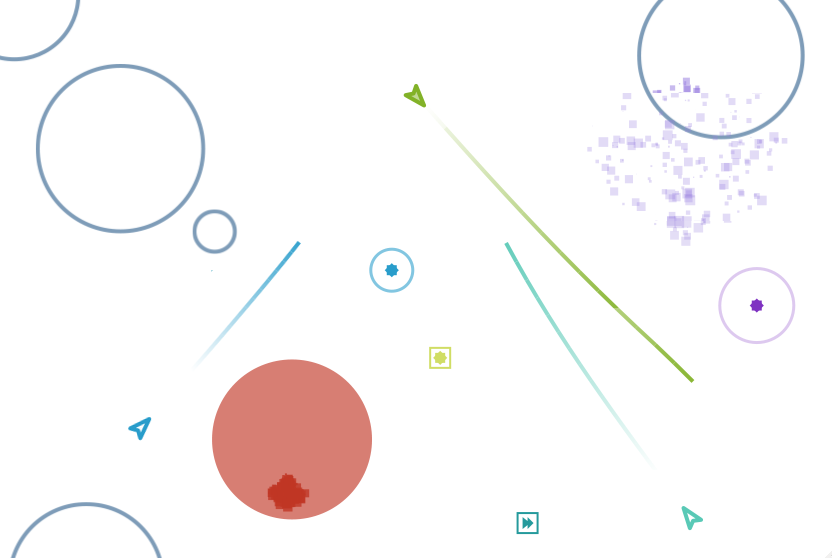
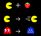

JavaScript: Objects and Prototypes
JavaScript
Object ands Prototypes
- PhD, Mines Nantes, France
- Also teach JS there

- Multiplayer game in JS server+client
- Coded a lot of JS

- There was some confusion
- Prototypes, variable hoisting, `this` semantics
- Switched to CoffeeScript
- Classes, no globals, syntactic sugar
- But still JS below the curtains
BACK<
&javascript
- Used JS on other projects
- Read a lot, understood stuff
- Now I love the JS way
JavaScript
Object ands Prototypes
CUIDADO!
This is not a course on JavaScript.
This is a course on object-oriented concepts illustrated in
JavaScript.
That said...
- Not a course on best practices, standard or performant JS
- JS course would have browser, events, async, ...
JavaScript
Looks like Java
Acts like Scheme
Borrows from Self, Perl and PHP
- Java syntax
- Scheme: dynamic typing and functions
- Self: prototypes
Four ingredients
- Primitives
- Variables
- Functions
- Objects
Primitives
Numbers:
123 * 321
Strings:
"str" + 'ing'
Variables
var fruta;
fruta = "manzana";
var jugo = "Jugo de " + fruta;
jugo
- Declaration
- Assignments & mutability
- Note absence of type (like Scheme)
Functions
function square(x) { return x * x; }
square(12)
Imperative syntax, so return and f() call
Functions are first-class values and close over their lexical
scope
function adder(x) {
return function(y) {
return x + y;
}
}
var add2 = adder(2);
add2(20);
Objects
Bags of properties: no distinction between methods and fields
Not “instances” of a “class”
Just a bag, or dictionary
{
fruta: "frambuesa",
aNumber: 2,
square: function(x) {
return x * x;
},
anObject: {
x: 3,
y: 12
}
}
- Values: primitives, functions, objects
Objects are dynamic
var o = { x: 2 };
o.x = 12;
o.y = function() { return 5; };
delete o.x;
o.x ↪ undefined
o.y ↪ [Function]
Unknown properties return undefined
- Add, modify, delete properties
Self-reference
var A = {
x: 2,
square: function() {
return this.x * this.x;
}
}
A.square();
this binds to A
- Core OO concept
- Keyword is `this`, needs to be explicit
- `this` binds to A, the receiver
Functions model
+-----------------+
| +-----------+ |
+----+ | | bindings | |
|this|----------->| +-----------+ |
+----+ | |
| function |
| |
+------------+ | +--------+ | +-------+
| arguments |--->| | body | |-->|return |
+------------+ | +--------+ | |value |
+-----------------+ +-------+
this is bound at call-time to the receiver
`this`: extra hidden argument
var A = {
x: 2,
square: function() {
return this.x * this.x;
}
}
var B = { x: 10 };
B.square = A.square;
B.square();
`this` is dynamic, same function, binds to receiver
Forwarding
var hare = { x: 0, speed: 2,
step: function() {
this.x += this.speed;
}
};
var turtle = { x: 0, speed: 1,
step: function() {
this.x += this.speed;
}
};
- Share behavior between objects
- How to eliminate duplication of `step`?
var hare = { x: 0, speed: 2,
step: function() {
this.x += this.speed;
}
};
var turtle = { x: 0, speed: 1,
step: hare.step
}
hare.step(); hare.x; ↪ 2
turtle.step(); turtle.x; ↪ 1
Forwarding does not scale
var hare = {
step: ..., run: ...
sleep: ..., eat: ...
...
}
var turtle = {
step: hare.step, run: hare.run,
sleep: hare.sleep, eat: hare.eat,
...
}
How to say it more directly?
Delegation with prototypes
var hare = { x: 0, speed: 2,
step: function() {
this.x += this.speed; }
}
var turtle = {
__proto__: hare, x: 0, speed: 1
}
turtle.step();
turtle.x;
proto special property
Prototype
+--------+ prototype +--------+
| B |------------->| A |
| y: 3 | | x: 2 |
+--------+ | y: 5 |
+--------+
Properties are looked up along the prototype chain
Finite proto chains without cycles
Object construction with literals
var b = {};
var o = {
x: 12,
f: function() { ... }
};
Literals have limits
var duck1 = {
size: 12, swim: function() { ... }
}
var duck2 = {
size: 2, swim: function() { ... }
}
var duck3 = {
size: 5, swim: function() { ... }
}
Cloning
- JS has no clone, unlike Self
- Will do without
Factories to the rescue
function duckMaker(size) {
return {
size: size,
swim: function() { ... }
};
}
var donald = duckMaker(12);
var scrooge = duckMaker(2);
var louie = duckMaker(5);
- swim is still duplicated at runtime, not shared
- swim update needs to happen for each duck
Shared behavior using prototypes
var protoDuck = { swim: function() { /* */ } };
function duckMaker(size) {
return { __proto__: protoDuck, size: size };
}
var donald = duckMaker(12);
var scrooge = duckMaker(2);
protoDuck.eat = function() { this.size += 1; }
donald.eat(); donald.size; ↪ 13
scrooge.eat(); scrooge.size; ↪ 3
Modifications to behavior is shared as well
Abstracting factories
function createObject(proto, properties) {
properties.__proto__ = proto;
return properties;
}
function duckMaker(size) {
return createObject(protoDuck, {
size: size
});
}
var donald = duckMaker(12);
var scrooge = createObject(protoDuck, {size: 5});
The “Java-like” way
function Duck(size) {
this.size = size;
}
Duck.prototype.swim = function(){...};
Duck.prototype.eat = function(){...};
var donald = new Duck(12);
new creates an empty object, binds it
to this, and assigns
its __proto__ to Duck.prototype
- `new` creates empty object
- binds `this`
- assigns proto to Duck.prototype
Dynamic inheritance
__proto__ is just a property
It can be changed dynamically
Change class of instance at runtime in Java?
var duck = {
swim: function() { ... }
}
var witch = {
burn: function() { ... }
}
var donald = { __proto__: duck };
donald.swim();
donald.__proto__ = witch;
donald.burn();
The Pacman example

- Eats fruit, becomes fast, eats ghosts
- Ghosts flee in terror
var pacman = {
x: 0, speed: 1,
hasEatenFruit: false,
move: function() { this.x += this.speed; },
collideWithGhost: function() {
if (this.hasEatenFruit) ghost.die();
else this.die();
},
eatFruit: function() {
this.hasEatenFruit = true;
this.speed = 2;
ghost.flee = true;
}
}
- flags for state, have to use if/else
- scattered behavior
var ghost = {
move: function() {
if (this.flee)
fleePacman();
else
huntPacman();
}
}
Same thing
Prototypes to the rescue!
var pacman = { __proto__: protoPacman, x: 0 };
var protoPacman = {
speed: 1,
move: function() { this.x += this.speed; },
collideWithGhost: function() { this.die(); },
eatFruit: function() {
this.__proto__ = superPacman;
ghost.__proto__ = fleeingGhost; } }
var superPacman = {
__proto__: protoPacman,
speed: 2,
collideWithGhost: function() { ghost.die(); } }
- One object per state
- State pattern by inheritance instead of composition
var ghost = {
__proto__: protoGhost
}
var protoGhost = {
move: function() { huntPacman(); }
}
var fleeingGhost = {
move: function() { fleePacman(); }
}
One object per state
Takeaway
- Dynamic binding of
this for delegation
- Prototypes for shared behavior and state
- Factories for creating similar objects
- Dynamic inheritance for state pattern
Objects literals have Object.prototype as their __proto__
var o = {};
o.toString(); ↪ "{}"
Object.prototype.x = 12;
o.x; ↪ 12
Modifying Object.prototype adds properties to all objects
Functions herit from Function.prototype
var f = function() { return 2; }
f.call; ↪ [Function]
f.call(); ↪ 2
The “global” object
var x = 12;
this.x; ↪ 12
The top level is another object
function f() { return this.x; }
f(); ↪ 12
this binds to it for calls without an explicit receiver
This explains...
var A = {
x: 2,
square: function() {
return this.x * this.x;
}
}
var square = A.square;
square(); ↪ undefined
this.x = 8;
square(); ↪ 64
You can override the value of this
var A = {
x: 2,
square: function() {
return this.x * this.x;
}
}
var square = A.square;
square.call(A); ↪ 4
You can also bind this
var A = {
x: 2,
square: function() {
return this.x * this.x;
}
}
var square = A.square.bind(A);
square(); ↪ 4
And that leads to...
var bind = Function.prototype
.call.bind(Function.prototype.bind);
bind({x:12}, square)(); ↪ 144
bind({x:8}, square)(); ↪ 64
// bind(Obj, func) <=> func.bind(Obj)